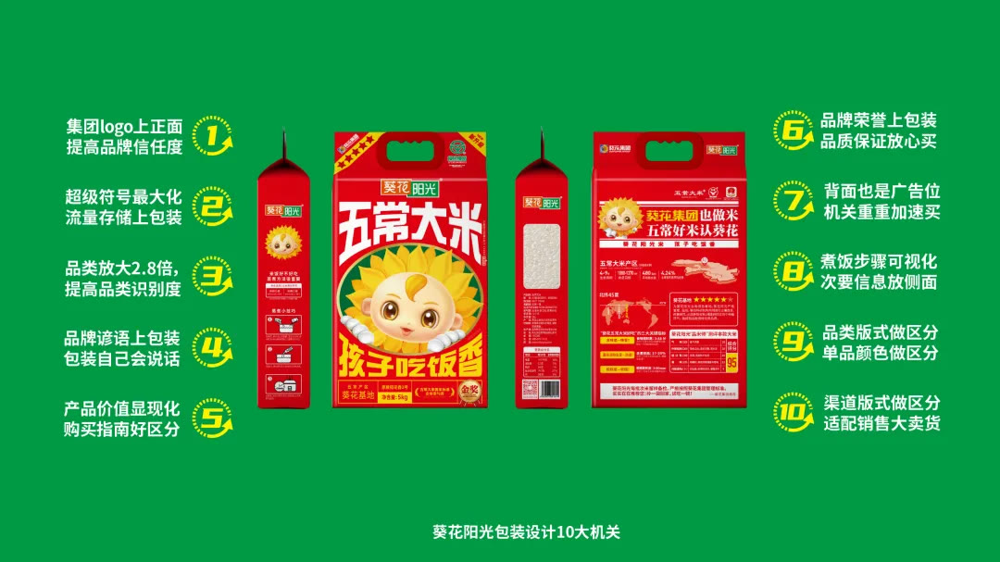
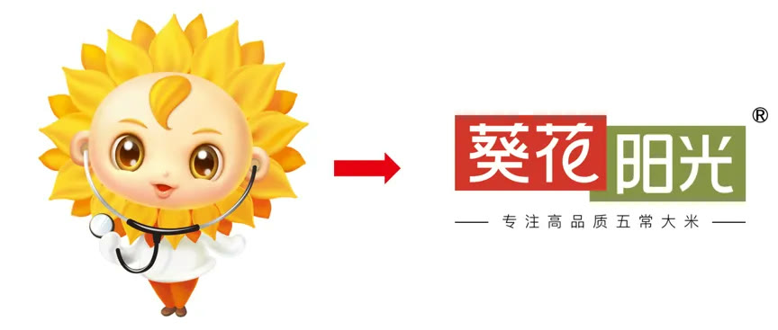
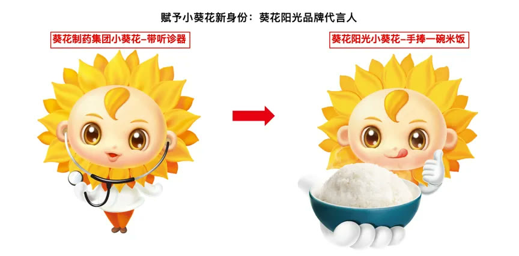

01 · 战略
先确定大米品牌的长期价值
企业能力、产地与消费者需求被组织为统一方向。

02 · 符号
超级符号建立快速识别
核心图形进入包装与传播，形成专属资产。

03 · 语言
品牌谚语提供购买理由
固定话语把产品价值转化为容易理解和复述的表达。

04 · 包装
让不同规格共同积累品牌
信息层级说明产品差异，同时保持主品牌连续。


01 · 战略
企业能力、产地与消费者需求被组织为统一方向。
02 · 符号
核心图形进入包装与传播，形成专属资产。

03 · 语言
固定话语把产品价值转化为容易理解和复述的表达。

04 · 包装
信息层级说明产品差异，同时保持主品牌连续。